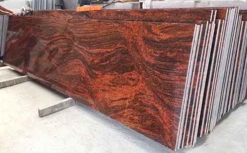

Multi Red Slabs

Description:-
Subtle hardness, resistance to durability, smooth finishing, scratch, heat resistance, and durability make it famous.
Indian Multi Red name is the result of a rich deep red color. Indian Multi Red Granite is suitable for interior and exterior use;
furthermore, it is frost resistant and has a constant polish.